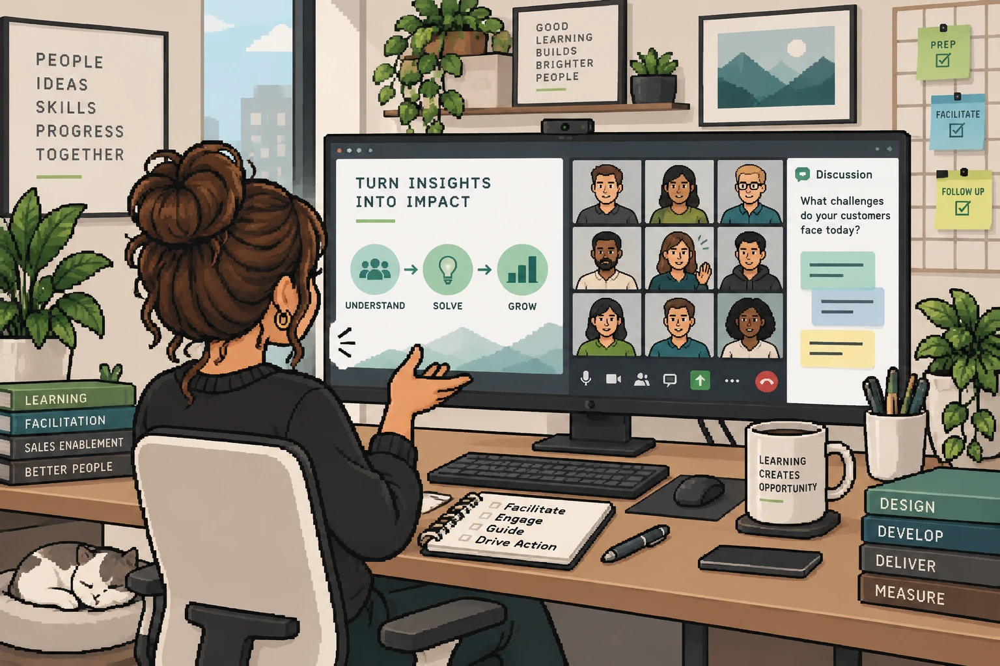

Live training
Use live time when learners need to explain a decision, hear other reasoning, ask questions, and practice with feedback.
Discuss a choiceHear the signalAdjust and practice
Instructional Design / Live Learning
A useful live session has a plan—and room to change it.
I design activities and support materials around a clear learning goal, then use questions, discussion, and practice to see what learners need in the moment. My direct delivery experience spans high-school classrooms and assigned modules in virtual sales workshops.
Choose the format for the job
Different formats serve different moments in learning. The choice depends on what people need to do, and when they need support.
Use live time when learners need to explain a decision, hear other reasoning, ask questions, and practice with feedback.
Experience foundation
My classroom experience shaped how I read participation and adjust an explanation. Instructional design gives that judgment a prepared structure; virtual facilitation puts it to work with sellers and partners.
I taught high-school history and English, planned activities, watched for understanding, and adjusted instruction based on what students showed me.
I structure objectives, examples, practice, timing, prompts, materials, and facilitator guidance so a live session has a usable path.
In a larger MEDDPICC workshop, I facilitated assigned modules for internal sellers and external partners in U.S. and international virtual sessions.
Three delivery environments
Consider the same goal in each setting: learners examine a fictional sales conversation, explain which evidence matters, and choose a useful next question. The interaction and the signals available to a facilitator change with the room.
Physical materials and face-to-face conversation make thinking visible, but every learner still needs a way into the activity.
Prepare a visible prompt, handouts, grouping, timed pair discussion, a share-back, and a backup route if materials or space change.
Circulate, listen for reasoning, watch who participates, compare responses aloud, and adjust grouping or pace before the final practice check.
Prompts, polls, chat, and participant examples give a remote facilitator signals to interpret while keeping application time intact.
Plan a screen-first sequence, short instructions, a poll and chat prompt, breakout practice, technical transitions, and a backup if a tool fails.
Read poll interpretations, recurring questions, examples, silence, and technical friction; then reframe or pause as needed while protecting practice and debrief.
This model applies my classroom, virtual, and design experience to a combined room. It does not represent a documented hybrid delivery project.
Use accessible shared materials, an audio plan, visible instructions, mixed-group roles, one response board, and a fallback for disconnected participants.
Alternate who contributes, repeat in-room comments into the mic, monitor remote chat, and check understanding from both audiences before moving on.
Same learning goal
In every version, learners justify an evidence-based decision and choose a next question. The design changes so the facilitator can hear their reasoning and respond.
| Design choice | In-Person | Live Online | Hybrid |
|---|---|---|---|
| Practice | Pairs annotate the example, then explain a choice aloud. | Poll first, discuss in chat or breakouts, then share reasoning. | Both audiences use the same prompt and response board. |
| Signal to read | Table talk, written work, and who has not contributed. | Poll patterns, questions, chat, examples, and silence. | Room contributions and remote responses on one shared view. |
| Risk to manage | A few voices dominate or transitions consume practice time. | Unclear instructions or technical friction obscure understanding. | Room conversation leaves remote learners out of the exchange. |
Featured direct facilitation case
Assigned modules within a larger virtual workshop for internal sellers and external partners in U.S. and international sessions.
I prepared from facilitator and participant materials, used questions and polling to surface reasoning, invited seller examples, and adjusted explanation or pace in response. Recurring questions informed reflection after the session.
Scope: I prepared for and facilitated assigned modules within an existing workshop, then reflected on learner questions and pacing after delivery.
Explore the case study